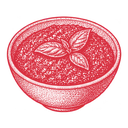

Et overdådigt fad til hyggeaftener og gæster.
Alt anrettes i hånden på dagen. Det, der ligger på fadet, står herunder.

Pesto Oliven Cornichoner Frugt Vores hjemmelavede langtidshævede havnebrødEller tilkøb en isdessert fra kortet.
Tidligst i morgen
Anbefalet af vores vinmand · 150 kr. pr. flaske
Ring til os, når bestillingen er sendt, så skriver vi ønskerne på.
28 87 13 43Når du sender, siger du ja til vores handelsbetingelser. Vi bruger dit navn og nummer til at lave og udlevere bestillingen. Se persondata og cookies.
Lander direkte i køkkenets overblik.